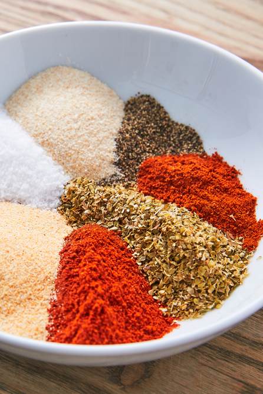

Lab 1
Lab 2Lab 3Lab 4
Recipe For Fried Chicken
Ingredients
chicken (cutlets or dumbsticks)
lime
garlic powder
paprika
salt
onion powder
adobo
oregano
pepper
flour

Steps
- first, you want to marinate the chicken & let it marinate overnight or for half an hour!
after that, you want to get the frying pan (wash it of course) then you want to let the oil sit until it sizzles
- afterthat, you want to have 2 plates, in one plate you want to put flour then in the other one you want to put eggs
in the four plate, you add some paprika , salt , pepper, & a little bit of adobo!
- you would want to coat it 2 times (depending on how thick you want it)
you want to put it in the pan and begin to fry it , about 5 minutes each side (depending on how crispy you want)
- lastly , you serve it and enjoy it